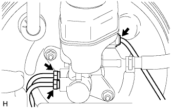
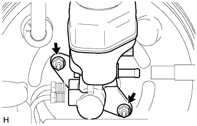
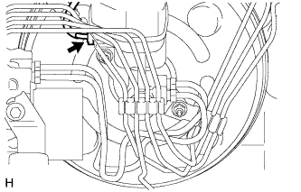
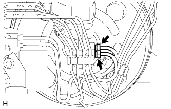
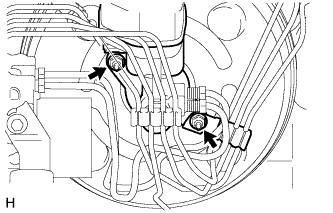

ГЛАВНЫЙ ЦИЛИНДР ТОРМОЗНОЙ СИСТЕМЫ > СНЯТИЕ |
| 1. СЛЕЙТЕ ТОРМОЗНУЮ ЖИДКОСТЬ |
| 2. СНИМИТЕ КОРПУС ВОЗДУШНОГО ФИЛЬТРА (для моделей с 2TR-FE и правосторонним рулевым управлением) |
Снимите корпус воздушного фильтра (Нажмите здесь).
| 3. СНИМИТЕ КОРПУС ВОЗДУШНОГО ФИЛЬТРА В СБОРЕ (для моделей с 5L-E и правосторонним рулевым управлением) |
Снимите корпус воздушного фильтра в сборе (Нажмите здесь).
| 4. СНИМИТЕ БЛОК УПРАВЛЕНИЯ РАБОЧИМИ ЦИЛИНДРАМИ ТОРМОЗОВ В СБОРЕ (для моделей с правосторонним рулевым управлением) |
Снимите блок управления рабочими цилиндрами тормозов в сборе (Нажмите здесь).
| 5. ОТСОЕДИНИТЕ ТРУБКУ СЦЕПЛЕНИЯ (для моделей с левосторонним рулевым управлением и механической трансмиссией) |
 |
Сдвиньте фиксатор и отсоедините трубопровод привода сцепления.
| 6. СНИМИТЕ ГЛАВНЫЙ ЦИЛИНДР ТОРМОЗНОЙ СИСТЕМЫ В СБОРЕ |
Для моделей с левосторонним рулевым управлением:
|  |
Отсоедините разъем.
С помощью разрезной головки отсоедините 2 трубопровода тормозной системы от главного цилиндра тормозной системы в сборе.
|  |
Отверните 2 гайки и снимите главный цилиндр тормозной системы в сборе.
Снимите кольцевое уплотнение с главного цилиндра тормозной системы в сборе.
Для моделей с правосторонним рулевым управлением:
|  |
Отсоедините разъем.
|  |
С помощью разрезной головки отсоедините 2 трубопровода тормозной системы от главного цилиндра тормозной системы в сборе.
|  |
Отверните 2 гайки.
Снимите зажим и главный цилиндр тормозной системы с усилителя тормозной системы.
Снимите главный цилиндр тормозной системы в сборе.
Снимите кольцевое уплотнение с главного цилиндра тормозной системы в сборе.